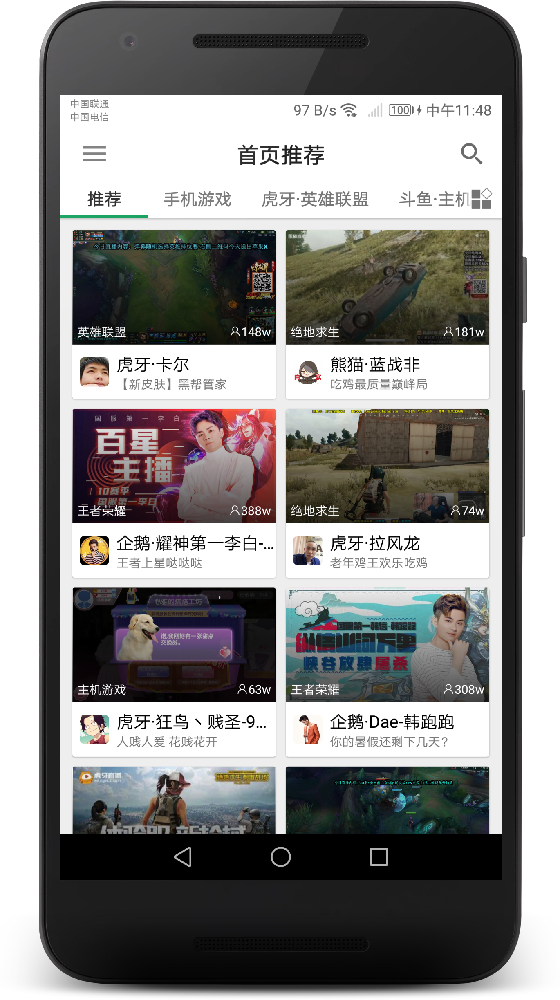
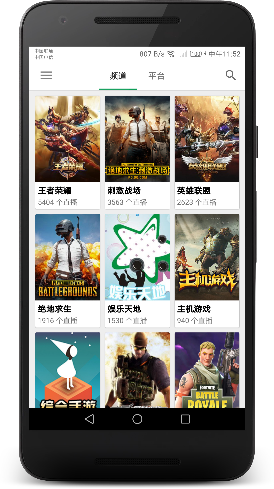
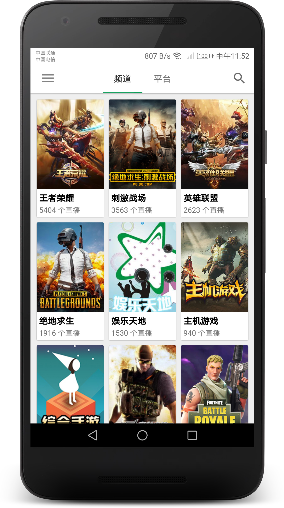

最近更新：
新增全屏左滑出关注/历史能力（可在设置中自定义） 新增弹幕关键词过滤能力（在横屏中的“弹”中设置） 新增夜间模式自动切换可以选择跟随系统的能力 修复战旗弹幕和主播头像显示问题 移除图标切换能力（很多机型上出现莫名其妙的问题，为了保证稳定而移除） 移除全屏时双击切换显示模式能力（并不常用，而且非常容易误触，可在设置中重新启用）如遇更新后无法打开的问题，请卸载重装试试
目前直播平台众多，主播们与不同平台签约，导致用户往往需要装很多直播 APP，而且这些 APP 往往非常臃肿。
Z直播是一个大小只有 5M 左右的 Android APP，却支持近十个平台的直播和弹幕，同时拥有以下非常多特性：
- 云端同步：可同步关注和自定义频道
- 后台小窗：切换到后台时继续小窗播放
- 电视投屏：可将直播投屏到电视上
- 历史观看：云端同步观看记录
- 多彩主题：自定义主题颜色，15 种色彩可选
- 屏蔽管理：屏蔽主播、频道
- 开播提醒：主播开播会收到通知提醒
这是我业余时间独立开发的 APP，希望能给你带来便利以及得到你的喜欢~

 
